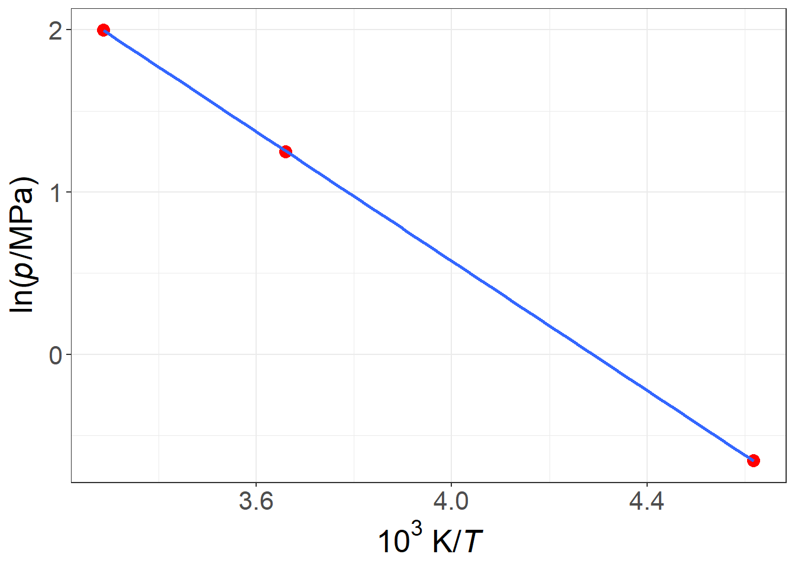

Capítulo 1 Cantidades físicas y cálculo de cantidades
El valor de una cantidad física Q puede expresarse como el producto de un valor numérico {Q} y una unidad [Q] \[ Q = \{Q\}\ [Q]\] ni el nombre de la cantidad física, ni el símbolo utilizado para denotarla, implican una elección particular de la unidad 1.
Las cantidades físicas, los valores numéricos y las unidades pueden manipularse con las reglas ordinarias del álgebra. Así podemos escribir, por ejemplo, para la longitud de onda \(\lambda\) de una de las líneas amarillas de sodio. \[\begin{equation} \lambda = 5.896\times 10^{-7}\text{ m} = 589.6\text{ nm} \tag{1.1} \end{equation}\]
donde m es el símbolo de la unidad de longitud llamada metro, nm es el símbolo del nanómetro, y las unidades metro y nanómetro están relacionadas por: \[\begin{equation} 1\text{ nm} = 10^{-9}\text{ m} \tag{1.2} \end{equation}\] La equivalencia de las dos expresiones para \(\lambda\) en la ecuación (1.1) se deduce de inmediato cuando tratamos las unidades según las reglas del álgebra y reconocemos la identidad de \(1 \text{ nm}\) y \(10^{-9} \text{ m}\) en la ecuación (1.2). La longitud de onda puede expresarse igualmente en la forma: \[\begin{equation} \lambda/\text{m} = 5.896\times 10^{-7} \tag{1.3} \end{equation}\] o \[\begin{equation} \lambda/\text{nm} = 589.6 \tag{1.4} \end{equation}\] Puede ser útil trabajar con variables que se definen dividiendo la cantidad por una unidad determinada. Por ejemplo, al tabular los valores numéricos de las magnitudes físicas o al etiquetar los ejes de los gráficos, es especialmente conveniente utilizar el cociente de una magnitud física y una unidad de forma que los valores a tabular sean valores numéricos, como en las ecuaciones (1.3) y (1.4).
| \(T/\text{K}\) | \(10^{3}\ \text{K}/T\) | \(p/\text{MPa}\) | \(\ln \left(p/\text{MPa}\right)\) |
|---|---|---|---|
| 216.55 | 4.6179 | 0.5180 | -0.6578 |
| 273.15 | 3.6610 | 3.4853 | 1.2486 |
| 304.19 | 3.2874 | 7.3815 | 1.9990 |

\[\SI{12345,67890}{\mole\per\liter}\]
El símbolo [Q] se utilizaba antes para la dimensión de Q, pero este símbolo se utiliza y se prefiere para la unidad de Q.↩︎